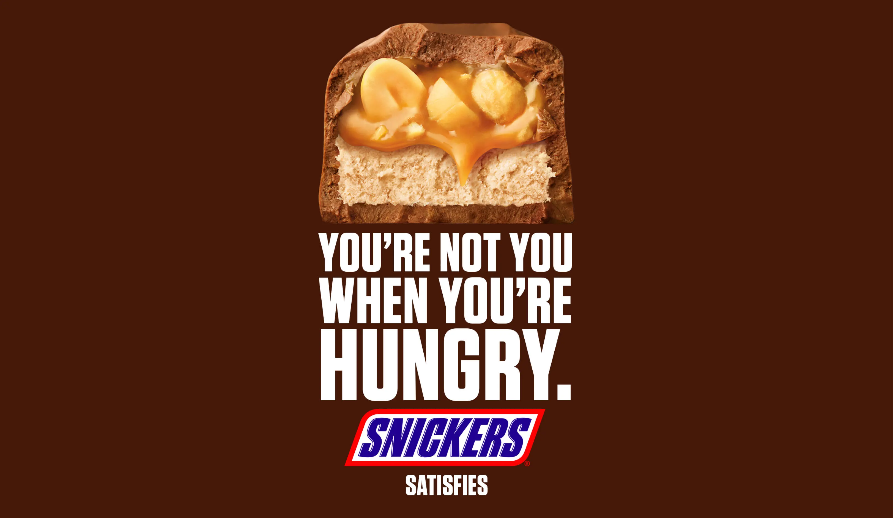
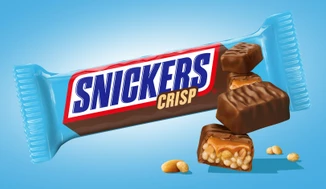

In de dertiger jaren had familie Mars naast andere huisdieren ook een gezinspaard. Dit paard droeg de
naam Snickers,
de SNICKERS reep is naar dit paard vernoemd. Deze reep werd gemaakt in Amerika, om precies te zijn
in Chicago,
en koste destijds 5 cent.
1967-1990
Dit heerlijke product kwam in 1968 naar het Verenigd Koningkrijk,
onder de iconische naam MARATHON. Later, in 1990 werd deze naam
veranderd in SNICKERS.
2010
De bekroonde campagne “je bent jezelf niet als je trek hebt” wordt gelanceerd in 2010 en
erg goed ontvangen. In deze campagne wordt op een originele en grappige manier
duidelijk gemaakt wat trek met je kan doen. Onder andere de iconische Betty White
was een grote ster in deze campagne.

2019
SNICKERS Crisp wordt geïntroduceerd: luchtige gepofte rijst met de
vertrouwde SNICKERS-smaak.

2021
De smaak peanut butter is ontzettend populair en heeft veel liefhebbers,
in 2021 lanceert Snickers vol trots de Snickers Creamy Peanut Butter variant.